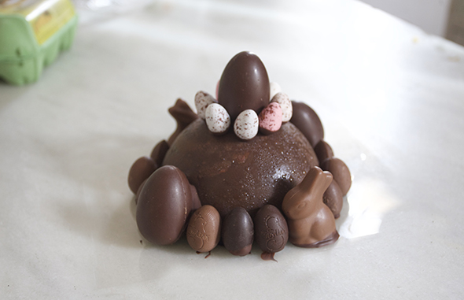

Josefa nos ha dado una sorpresa riquisima! :-)
Josefa has given us a very delicious surprise! :-)
Josefa hat uns eine sehr leckere Überraschung gemacht! :-)


Josefa has given us a very delicious surprise! :-)
Josefa hat uns eine sehr leckere Überraschung gemacht! :-)